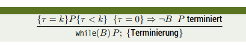

Design and Correctness of Algorithms
Pseudocode
As we've learnt in the last lecture pseudocode is one of the most popular semiformal specification languages.
Pseudocode generally defines a set of instructions, there are no strict rules on how pseudocode needs to look like, therefore there are many forms of it, which is okay as long as it is intuitively readable.
Example pseudocode for the Euclidian Algorithm:
Require: A, B ∈ N, A > 0 ∩ B > 0
Ensure: a = b = gcd(A, B)
a ← A; b ← B
while a ≠ b do
if a < b then
b ← b - a
else
a ← a - b
end if
end while
The slides note at this point that in the future we'll often look at algorithms in pseudo code.
Correctness
When you find an approach for a problem / an algorithm, the correctness has to be validated.
It is advised to verify the correctness of the idea first and then the correctness of the concrete algorithm. The correctness of an idea cannot be verified formally, but the following things should be pondered:
- does the idea work in general or just for a specific case?
- are there special cases in which the idea does not work out? are these relevant?
- try finding an counter-example
- what about extreme cases?
What follows on slides 25-30 are some example problems and ideas to solve them, take a look there if you want.
As stated before the correctness of the concrete algorithm also has to be validated. There are in general two ways to do this:
-
Exhaustive Testing
- verify that there is no incorrect behaviour in the implementation of the algorithm by testing/executing it with all possible data inputs/combinations
- Problems:
- usually this is impossible since the possible data combinations are really large or even infinite
- partial testing may boost the confidence in regards to the correctness of a program/algorithm, but does not replace a proof
- a good selection of test cases is difficult
-
Correctness Proof (Korrektheitsbeweis)
- verify correct behaviour via mathematical methods/proofs
- Problems:
- are difficult or impossible on the level of implementation because of lacking formalization
To proof the correctness it can be performed on a more abstract level instead. Mistakes are then however possible when performing the concrete implementation. We'll continue to look at proofs and not tests.
Proofs
Slides: Informale Definition = Ein Beweis ist eine Herleitung einer Aussage aus bereits bewiesenen Aussagen und/oder Grundannahmen (Axiomen)
We know a few different (but still combinable) methods for proofs:
-
deduction
- classical proof via combination of premises
- eg: all humans are mortal(premise 1) & all kings are humans (premise 2) → all kings are mortal (conclusion/deduction)
- the correctness of the premises has to be given axiomatically or already been proven
-
complete case analysis/differentiation (vollständige Fallunterscheidung)
- when there are a finite amount of cases/variants then each one can be inspected individually
- if a statement is true for every case/variant then the statement is true as a whole
- eg: "all odd integers in the intervall [21, 23] are prime numbers" (statement) → 3 is prime, 5 is prime, 7 is prime → statement is true
-
complete /transfinite induction
- base cases (Induktionsanker/-anfang IA) show that a statement is valid for a special (smallest/first) case (often \(n = 0\) or \(n = 1\))
- step case / inductive step (Induktionsschritt)
- assume that the statement holds true for \(n=k\) (Induktionsvoraussetzung IV) and prove that then the statements holds for \(n=k+1\); proof that the induction hypothesis follows from the induction requirement
- Induktionsschluss → inference (Folgerung) that the statement holds for all cases starting at the first
-
indirect proof
- assume the opposite of the hypothesis/statement and find a disproof via axioms and proven concepts → inference that the assumption is wrong and therefore the hypothesis/statment is true
Proofs of Algorithms
To prove an algorithm you have to ask two questions. 1) What is there to be proven (Specification)? 2.) What is already known?
A distinction is made between 2 kinds of "correctness":
-
partial correctness
- an algorithm is partially correct if an answer is returned that this answer will be correct (slides: ein Algorithmus is partiell korrekt, wenn er für eine spezifizerte erfüllte Vorbedingung Q bei einer eventuellen/möglichen Terminierung eine spezifizerte Nachbedingung R erreicht, dh R is nach Ausführung erfüllt)
-
total correctness
- total correctness requires additionally to partial correctness that the algorithm terminates
So, if a partial correct algorithm terminates he yields a correct result and a total correct algorithm yields the correct result after a finite amount of time.
Proving Sort Algorithms
We already got to know a sorting algorithm in one of the first lectures (bubble sort). The correctness of a solution to the problem of sorting can be expressed independently from the algorithm: Input = sequence of elements (e1, e2, …, en) → Output = permutation (e'1, e'2, …, e'n) of (e1, e2, …, en) so that e'1 ≤ e'2 ≤ … ≤ e'n
The bubble sort algorithm would look like this in pseudocode:
Require: e1, …, en
Ensure: ∀ i ∈ {1, n-1}, ei ≤ ei+1
repeat
changed ← false
for i ← 1, …, n-1 do
if ei > ei+1then
SWAP(ei, ei+1)
changed ← true
end if
end for
until changed = false
Proving the partial correctness is simple: If this algorithm terminates changed has to be false which implicates that for no i ∈ {1, …, n-1} this ei > ei+1 can be true which in reverse means that ∀ i ∈ {1, …, n-1}, ei ≤ ei+1
Insertion Sort is an alternative algorithm to solve the sorting problem. This is the corresponding pseudocode:
Require: e1, …, en
Ensure: ∀ i ∈ {1, n-1}, ei ≤ ei+1
for j ← 2, …, n do
key ← ej
i ← j-1
while (i > 0) ∧ (ei > key) do
ei+1 ← ei ; move all elements that are greater than key right
i ← i-1
end while
ei+1 ← key ; fill the gap with key
end for
Take a look at slides 47 - 50 (chapter 7) for details on how to prove the correctness of insertion sort with lemmas.
Soundness (Korrektheitskalküle)
Proofs like the one we saw for bubble sort are ad hoc. There are/is a special logic/calculus (Kalküle → formales System zum Ziehen logischer Schlüsse) in regards to the correctness of programs, for example the FLoyd-Hoare logic (Hoare-Kalkül) or the wp-Kalkül (Edsger Dijkstra).
These logics/calculus use triples: {Precondition} Code {Postcondition}. There are axiomatic rules: \frac{premise}{consequence}
Termination
Partial Correctness is proven under the assumption that the code terminates. Therefore termination has to be proven to prove total correctness. This is especially critical when dealing with recursion (abort after finite steps and reach the recursion base) and loops (loop condition has to evaluate to false after finite steps and the loop body also has to terminate in each iteration).
To prove termination of a loop a termination function τ (Tau) has to be specified: \[ \tau : V \rightarrow \mathbb{N} \]
The termination function has to have the following characteristics:
- its values are natural numbers (including 0)
- each iteration resp. execution of the loop body reduces its value (strictly monotonically decreasing)
- the loop condition is false when τ = 0
- τ is the upper boundary for the loop iterations that are left
If a termination function is known a termination rule can be used: 
So if a termination function is strictly monotonically decreasing and the value 0 leads to the end of the loop and the loop body terminates, then the loop terminates
So this has to be shown:
- strictly monotonically decrease of τ
- the implication that the loop condition B is not met at the lowest τ
- the termination of the body P
Example of a termination function for a loop that calculates the square of a nonnegative integer:
/* { Input: 0 <= a} */
int y = 0;
int x = 0;
while (y != a) {
x = x + 2*y + 1;
y = y + 1;
}
/* { Output: x = a^2} */
Pick the termination function τ = a - y
- τ is decremented in each iteration, since 'y' is incremented and 'a' is constant
- if τ = 0 then y = a therefore the loop condition y != a evaluates to false
- the loop body does not contain recursions, gotos or other loops, termination is therefore trivial
→ The loop terminates!
To prove the termination of recursions the same procedure as with loops can be applied. A termination function τ is created that gets smaller with increasing recursion depth. The following has to apply:
- the values are natural numbers (incl 0)
- the value of τ decreases with each method call (recursion)
- discontinuation is forced at τ = 0 (or earlier)
/* Fibonacci Example */
int fib(int n) {
if (n < 3) return 1;
else return (fib(n-1) + fib(n-2));
}
However proving termination is not always possible (eg golbachs conjecture for expressing integers as sum of primes)